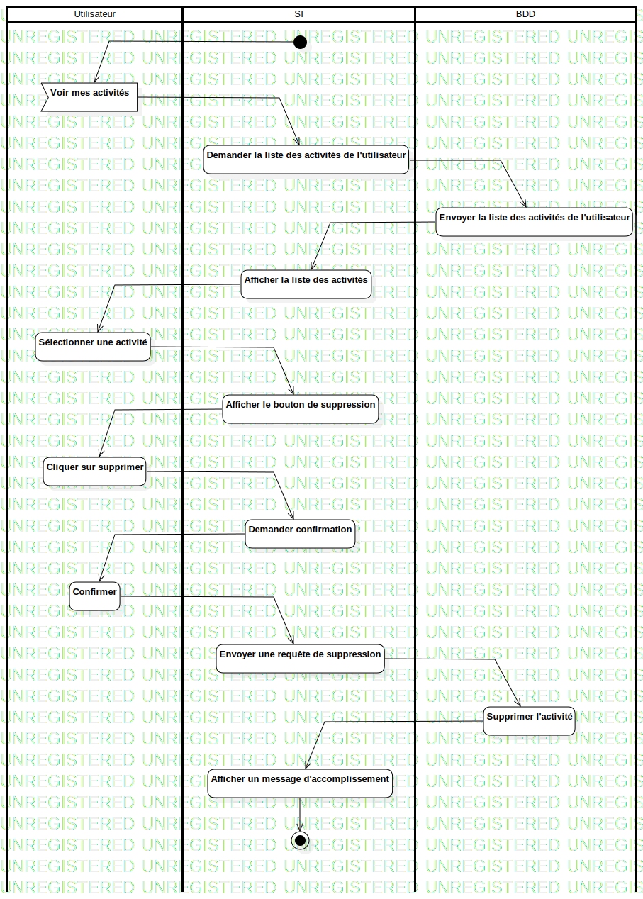

ActD Supprimer une tache
UMLActivity
Untitled
::
Tache
::
ActD Supprimer une tache
Description
none
Diagrams

ActD Supprimer une tache
Groups
Utilisateur
SI
BDD
Edges
(InitialNode1→Voir mes activités)
(Voir mes activités→Demander la liste des activités de l'utilisateur)
(Demander la liste des activités de l'utilisateur→Envoyer la liste des activités de l'utilisateur)
(Envoyer la liste des activités de l'utilisateur→Afficher la liste des activités)
(Afficher la liste des activités→Sélectionner une activité)
(Sélectionner une activité→Afficher le bouton de suppression)
(Afficher le bouton de suppression→Cliquer sur supprimer)
(Cliquer sur supprimer→Demander confirmation)
(Demander confirmation→Confirmer)
(Confirmer→Envoyer une requête de suppression)
(Envoyer une requête de suppression→Supprimer l'activité)
(Supprimer l'activité→Afficher un message d'accomplissement)
(Afficher un message d'accomplissement→ActivityFinalNode1)
Properties
Name
Value
name
ActD Supprimer une tache
stereotype
null
visibility
public
isReentrant
true
isReadOnly
false
isSingleExecution
false
Owned Elements
ActD Supprimer une tache